Oven Baked Soy Garlic Chicken
Sometimes you just need a spark to continue from where you left off
It's been a while since my last post. I slept past
hibernation season... Ok here goes nothing:
Yesterday night I had a late night dinner at Mad For Chicken, I was reminded of what amazing fried chicken tastes like. It was sooooo good that my sister and I had the leftovers for breakfast. However it did not satisfy my craving so I knew I had to make it for lunch!
One slight twist is instead of frying the chicken, we will be baking it because I didn't plan on running another 9 miles today and you shouldn't too.
Ingredients (2 servings)
- 8 Chicken Wings
- 1 Broccoli Bunch (Optional)
- 1 Egg
- Some Potato Starch
- 1 tbsp Minced Ginger
- 4 Garlic Cloves
- 1 tbsp Sesame oil
- 1 tbsp Honey
- 1 tbsp Chili Oil
- 3 tbsp Soy Sauce
- Seasoning (Salt, Pepper, Chili Powder)
- Rice (Optional)
Prep + Directions
- Wash the chicken
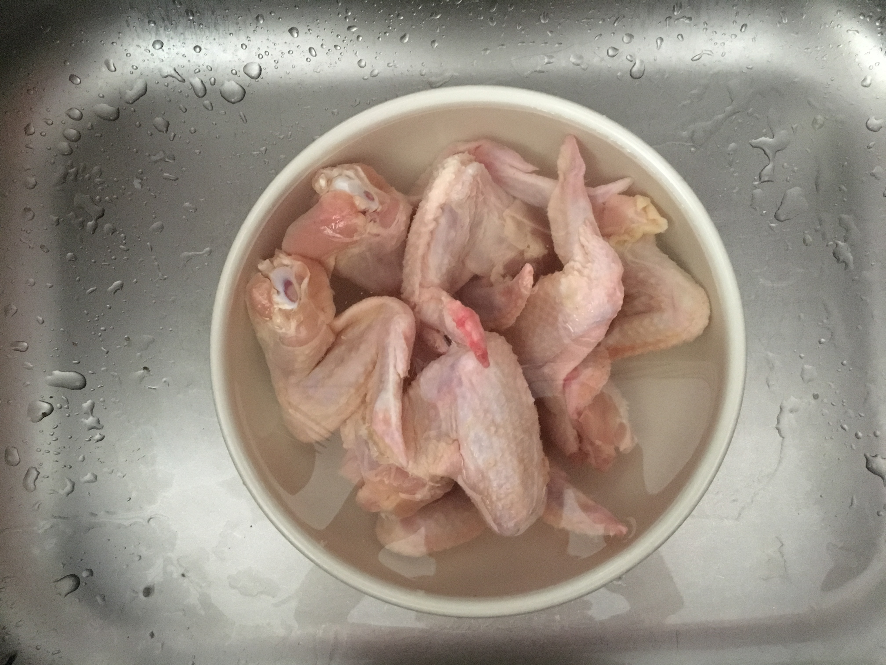 - Cut the chicken into a wing and a drumette. Cut the cartilage and not the bone so it's easier to separate.
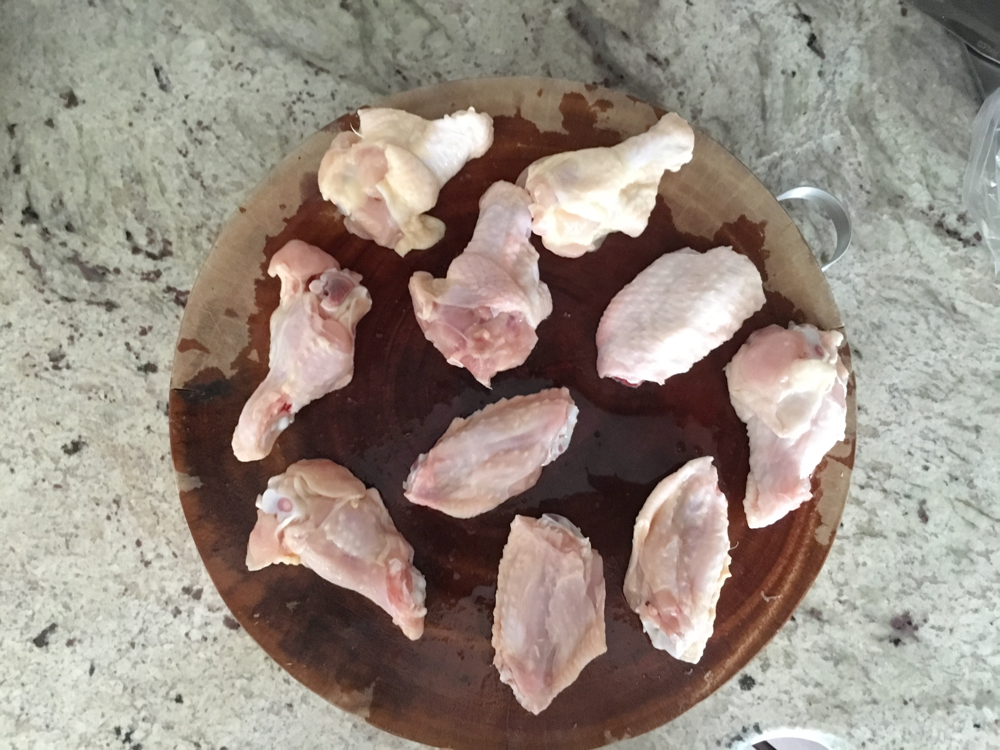 - Season the chicken with salt, pepper and chili powder
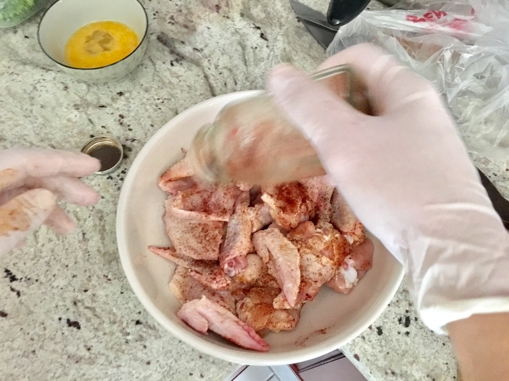 - Scramble an egg and mix it with the chicken. The egg will help the potato starch stick!
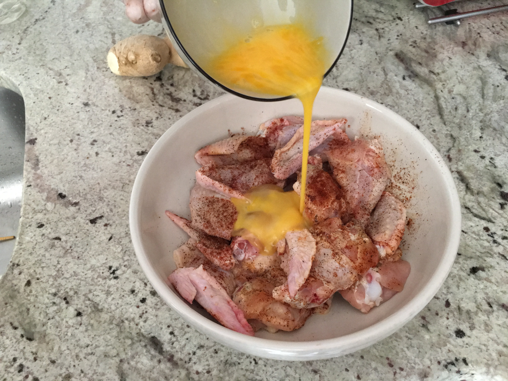 - Mix! Mix! Mix!
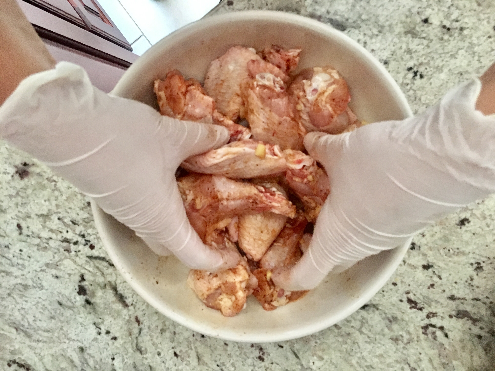 - Roll the chicken in potato starch and place it onto a baking rack. The potato starch will add a slight crispy-ness to the chicken.
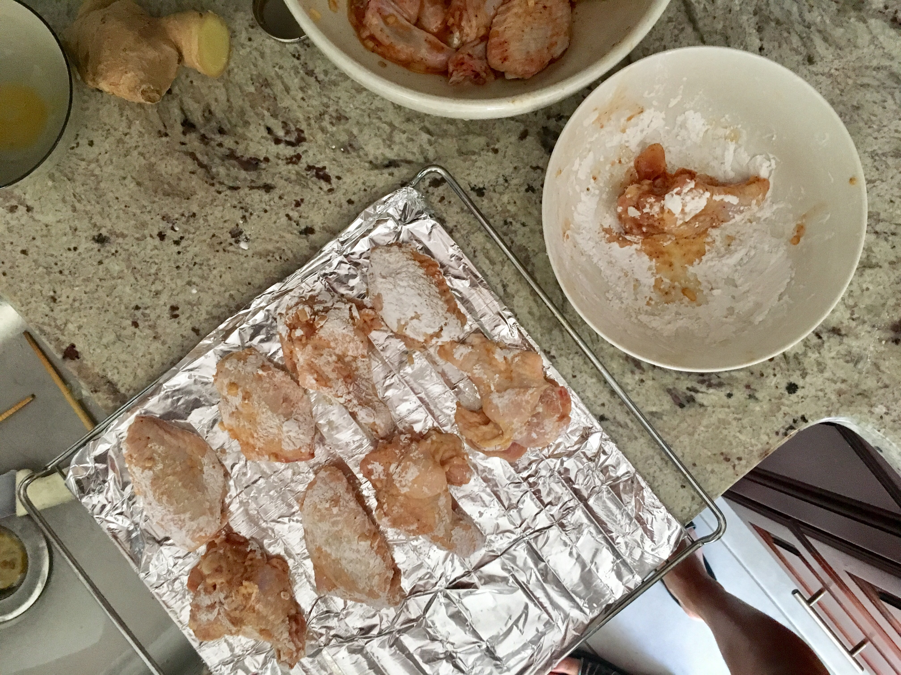 - Preheat oven to 450 degrees F
- Add the chicken into the oven for 25 minutes. Flip the chicken at the half way point (sounds like the nike running app notifying you are almost done with your run lol).
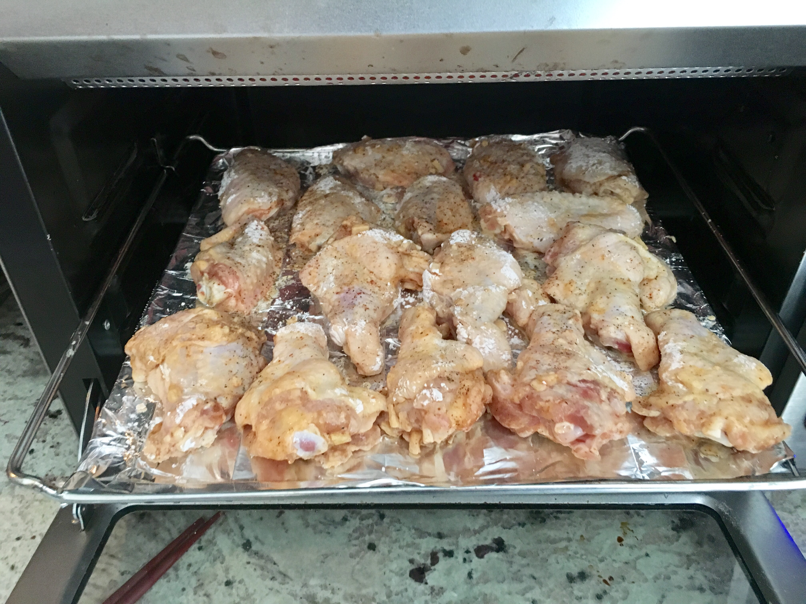 - Onto the sauce! Cut up the garlic and ginger into tiny pieces. Now mix it with the soy sauce (dark + light preferably), honey and chili oil.
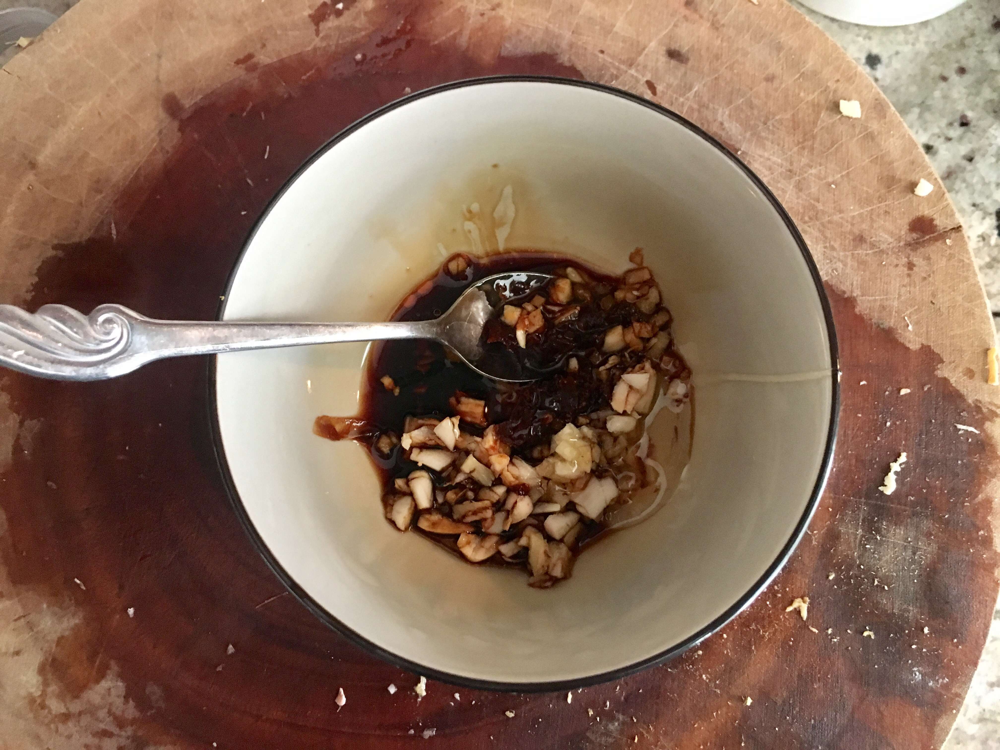 - On low heat, cook the sauce for 30 seconds the pour back into the bowl. This will thicken the sauce so that it will the coat the chicken easily additionally it will bring out the flavor of the garlic. Watch your nose, the chili oil will make your nose tingle.
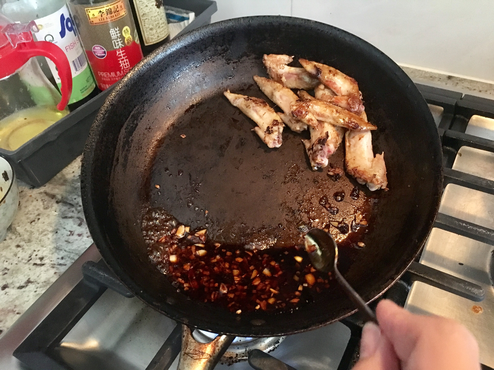 - Next boil some broccoli so we can balance out the dish and feel good eating a but unhealthly.
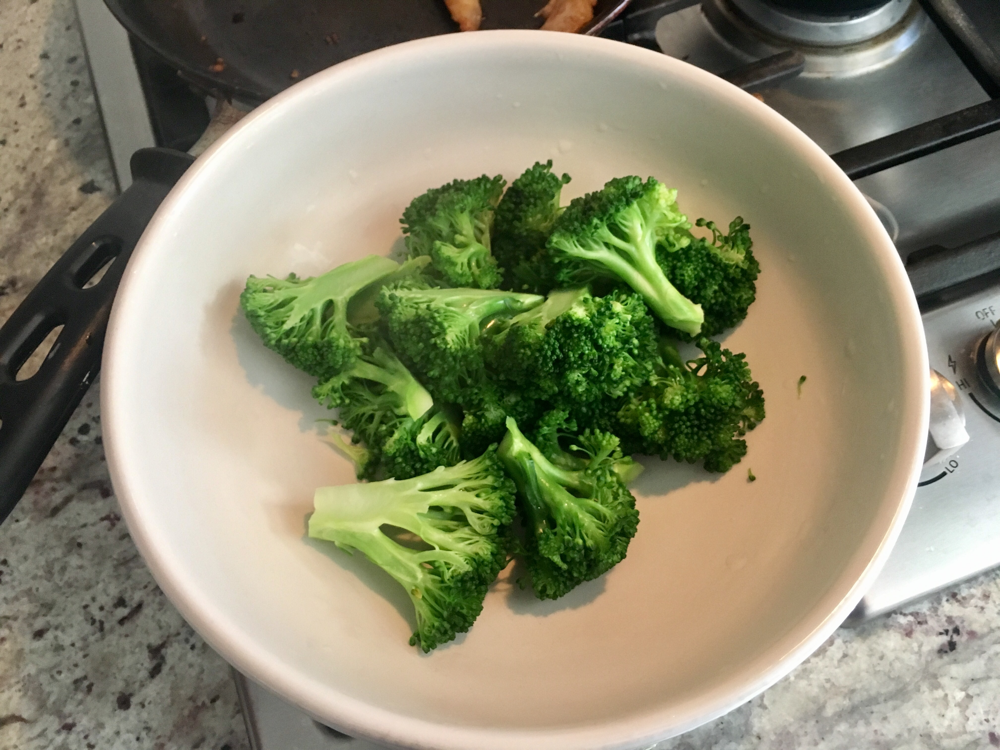 - Once the chicken is ready, place the chicken onto a pan on low heat. Pour the sauce.
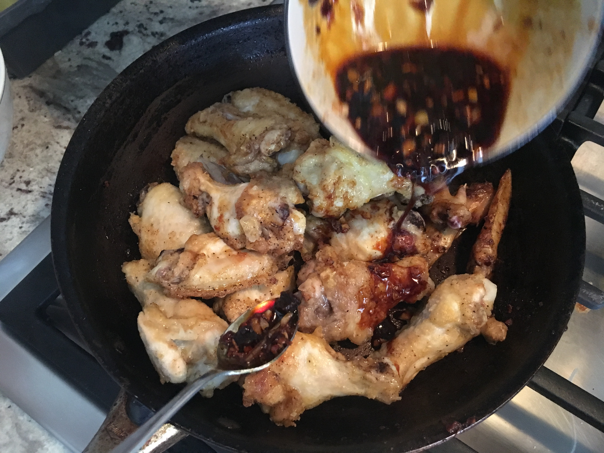 - Stir well
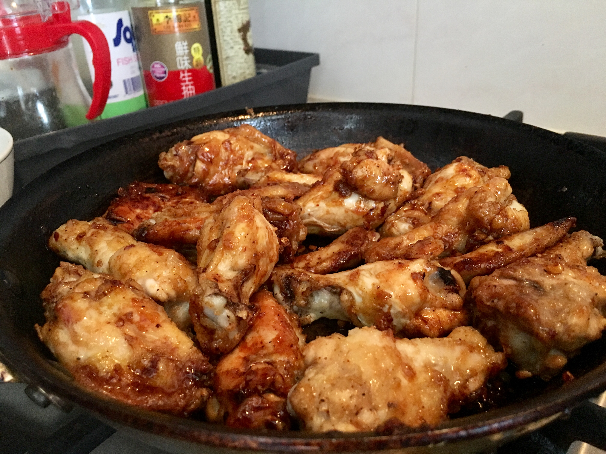 - Plate it!
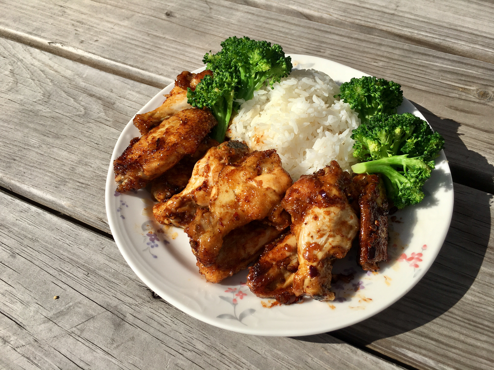
Bon Appetit
Hands down this is way better than mad for chicken from the simple fact that whenever you make something with your bare hands it always tastes better than the real thing. My sister gave this a 8/10. I gave her a 10/10 for eating every piece of meat off the chicken wings.